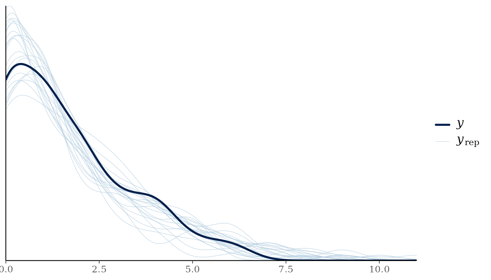
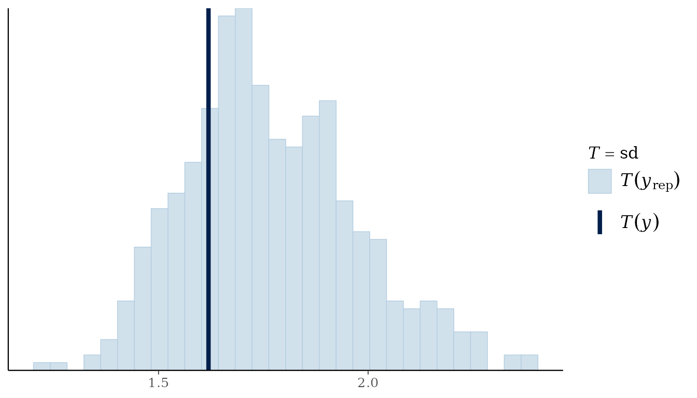
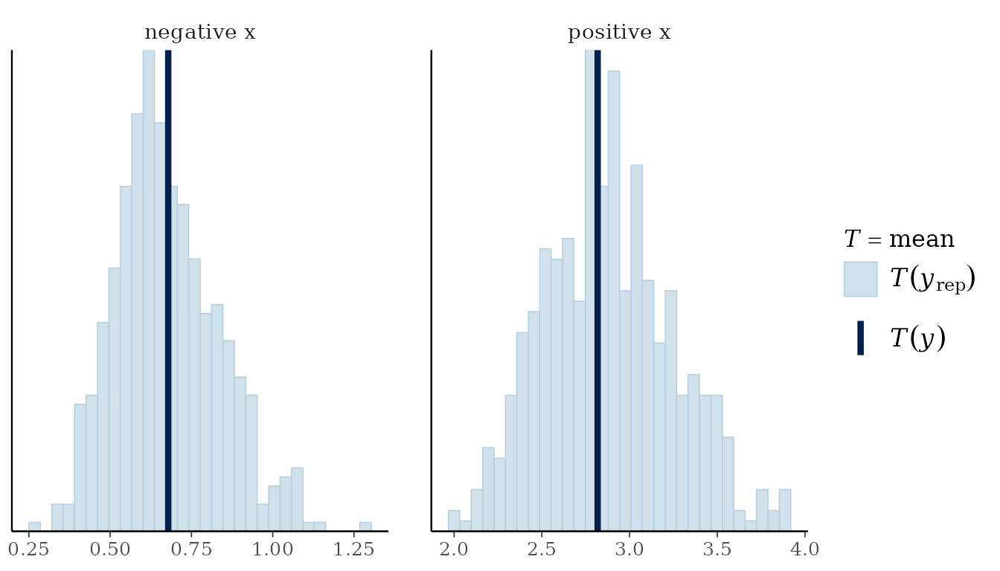
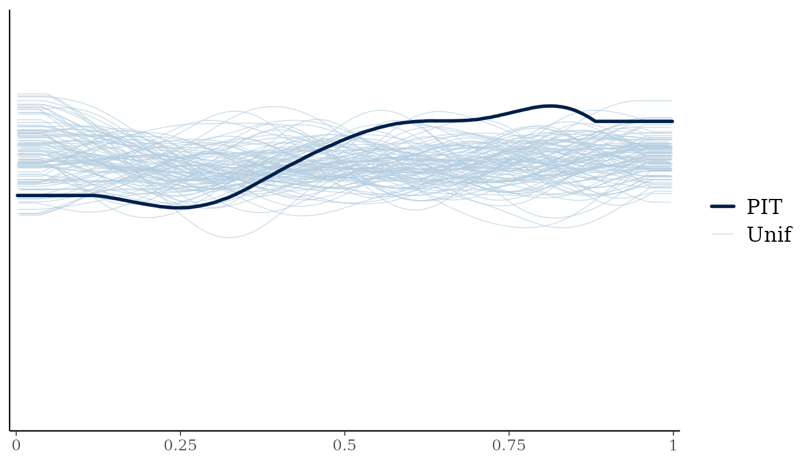

Posterior predictive checks and approximate leave-one-out comparisons
Gavin L. Simpson
Source:vignettes/articles/bayesplot-loo.Rmd
bayesplot-loo.RmdGratia can prepare posterior predictive checks for bayesplot and
observation log likelihoods for loo. Both packages are optional: install
them to use their methods. log_lik() itself needs neither
package. The existing appraise() and
posterior_predictive_plot() functions also work without
them.
Some bayesplot plots, including error_binned and the
LOO-PIT plots, also require bayesplot’s optional rstantools package;
install it with install.packages("rstantools") to use those
plots.
library("mgcv")
#> Loading required package: nlme
#> This is mgcv 1.9-4. For overview type '?mgcv'.
library("gratia")
set.seed(278)
dat <- data.frame(x = runif(100, -1, 1))
dat$y <- rpois(nrow(dat), exp(.3 + sin(3 * dat$x)))
linear <- gam(y ~ x, data = dat, family = poisson(), method = "REML")
smooth <- gam(y ~ s(x, k = 7), data = dat, family = poisson(), method = "REML")Check replicated responses
For each coefficient draw, a posterior predictive check generates another response at every fitting observation. The variation between these replicated data sets includes coefficient uncertainty and response variation.
bayesplot::pp_check(smooth, type = "dens_overlay", n_draws = 20, seed = 42)
bayesplot::pp_check(smooth, type = "stat", stat = "sd", n_draws = 500, seed = 42)
#> `stat_bin()` using `bins = 30`. Pick better value `binwidth`.
The first plot compares the observed response distribution with
replicated distributions. The second checks whether their standard
deviations cover the observed standard deviation. Other bayesplot
statistics can be supplied through stat, including a
function such as function(y) mean(y == 0) for the
proportion of zeroes. To display predictions alone, use
prefix = "ppd".
Grouped plots accept a fitting-frame variable name or a vector in fitting-row order. A vector is useful when the grouping variable was not used in the model.
bayesplot::pp_check(smooth, type = "stat_grouped", stat = "mean", n_draws = 500,
group = factor(dat$x > 0, labels = c("negative x", "positive x")), seed = 42)
#> Note: in most cases the default test statistic 'mean' is too weak to detect anything of interest.
#> `stat_bin()` using `bins = 30`. Pick better value `binwidth`.
Missing fitting rows are omitted consistently from responses and
covariates. Binomial checks use success counts and fitted trial counts;
gratia’s own posterior predictive plots use proportions. Multivariate
and grouped-family models require response, for example
"response1" or "component2". These selections
keep distinct responses and observation families from being pooled. For
gamm/gamm4 fits, conditioning retains its existing gratia
meaning.
Evaluate observed-response log likelihoods
log_lik() holds each response at its observed value and
evaluates its log density or log probability mass at each coefficient
draw. Rows are posterior draws and columns are retained fitting
observations. For example, a Poisson entry is
dpois(y[i], lambda = mu[s, i], log = TRUE).
ll <- gratia::log_lik(smooth, n_draws = 2000, seed = 42)
dim(ll)
#> [1] 2000 100
head(attr(ll, "observation"))
#> [1] 1 2 3 4 5 6
attr(ll, "gratia")
#> $method
#> [1] "gaussian"
#>
#> $n_draws
#> [1] 2000
#>
#> $chains
#> [1] 1
#>
#> $approximation
#> [1] "Gaussian coefficient posterior approximation"
#>
#> $fixed_parameters
#> [1] "Smoothing parameters and family parameters outside the coefficient vector remain at fitted values."
#>
#> $unconditional
#> [1] FALSE
#>
#> $posterior_correction
#> [1] FALSEThese values include the fitting likelihood’s normalising constants
and weights, but exclude smoothing penalties. They differ from the
single fitted log likelihood returned by
stats::logLik(smooth), whose existing behaviour is
unchanged. A multivariate-normal observation contributes a joint density
for its complete response vector. Grouped-family rows use their
respective family.
Compare predictive performance with loo
Loo uses importance weights to approximate the predictions obtained
by leaving one observation out. Its elpd_loo estimate
summarises expected log predictive density: larger values indicate
better predictions on the same response scale and the same
observations.
loo_linear <- loo::loo(linear, n_draws = 2000, seed = 42)
loo_smooth <- loo::loo(smooth, n_draws = 2000, seed = 42)
loo::loo_compare(loo_linear, loo_smooth)
#> model elpd_diff se_diff p_worse diag_diff diag_elpd
#> model2 0.0 0.0 NA
#> model1 -14.0 4.2 1.00
loo::pareto_k_table(loo_smooth)
#>
#> All Pareto k estimates are good (k < 0.7).The methods return ordinary loo objects, so loo’s plotting,
model-comparison and weighting tools are available. For an already
extracted matrix of independent Gaussian coefficient draws, the
equivalent calculation is loo::loo(ll, r_eff = 1).
loo::waic(smooth, n_draws = 2000, seed = 42) also works.
Model methods evaluate likelihoods one observation at a time, avoiding a
full draws-by-observations matrix unless saved PSIS weights are
requested.
Large Pareto-k values identify observations whose omission is difficult to approximate by reweighting the existing draws. Inspect these observations and loo’s warnings before relying on a comparison. Use explicit refits or a separate cross-validation analysis when reweighting is unreliable; these methods do not automatically refit models or perform moment matching.
LOO predictive plots use response simulations and importance weights from the same coefficient draws:
bayesplot::pp_check(smooth, type = "loo_pit_overlay", n_draws = 2000, seed = 42)
#> NOTE: The kernel density estimate assumes continuous observations and is not
#> optimal for discrete observations.
Understand the posterior approximation
By default, gratia draws coefficients jointly from mgcv’s Gaussian approximation. For a distributional GAM, this includes coefficients for each distribution parameter. For multivariate-normal likelihoods, it also includes the fitted precision-matrix coefficients. Scale, shape and other parameters outside the coefficient vector stay at fitted values, as do smoothing parameters.
This is a conditional approximation, rather than a procedure that
re-estimates every parameter for every omitted observation.
unconditional = TRUE can use mgcv’s corrected coefficient
covariance when available, but it does not draw those other parameters
jointly. PSIS calculations do not correct the Gaussian approximation,
and small Pareto-k values do not establish its accuracy.
# Extra sampler arguments are kept separate from loo and plotting arguments.
loo::loo(smooth, n_draws = 2000, seed = 42,
sampling_args = list(unconditional = TRUE))
bayesplot::pp_check(smooth, n_draws = 50, seed = 42,
sampling_args = list(unconditional = TRUE))
# Four chains share the total retained count, with separate burn-in.
loo::loo(smooth, n_draws = 2000, seed = 42,
sampling_args = list(method = "mh", chains = 4, burnin = 1000))For supplied coefficient draws, use
method = "user", draws = B in log_lik(), or
place those arguments in sampling_args for loo and
bayesplot. LOO uses the chain and iteration mapping stored by gratia’s
samplers. For an unlabelled matrix, supply chain_id or an
explicit r_eff; gratia cannot infer chain boundaries from
its dimensions. A supplied chain_id must agree with stored
metadata. Bootstrap coefficient samples do not become posterior draws by
passing them to this interface.
n_draws is the total retained count, so 2,000 draws over
four chains retains 500 draws per chain. Likelihood and LOO/WAIC
wrappers default to 4,000 draws; bayesplot uses 50 for ordinary checks
and 4,000 for leave-one-out plots. Supplied matrices determine their own
count and chains. These wrappers reject the obsolete n
argument, and inactive sampler controls produce errors. Use
diagnostics = TRUE directly in log_lik(), or
in sampling_args for LOO and bayesplot, to retain
coefficient diagnostics. The likelihood matrix also supports
as_mcmc_draws() for diagnostics of its observation-wise log
densities.
Likelihood and LOO methods initially cover independent GAM/BAM responses. They exclude residual-correlated BAMs, full gamm/gamm4 fits, quasi families, Cox partial likelihoods and censored observation processes. Supported ordinary posterior predictive checks retain their existing model coverage. With random-effect smooths, observation-level LOO predicts further observations in the fitted groups; it does not leave out entire groups.
The reproducible script inst/validation/loo-refits.R
compares representative Gaussian, Poisson and binomial PSIS results with
explicit leave-one-out refits. It distinguishes refits that hold
smoothing and nuisance parameters fixed from refits that re-estimate
them.